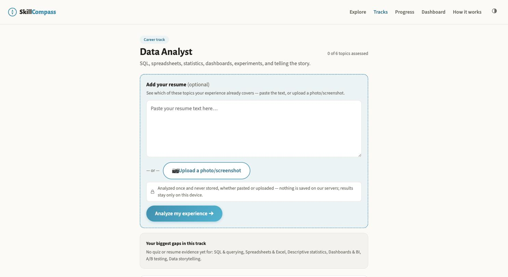
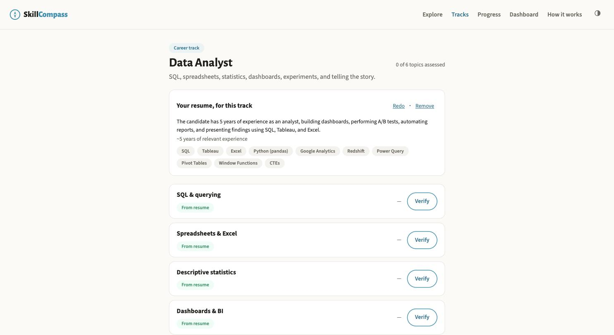
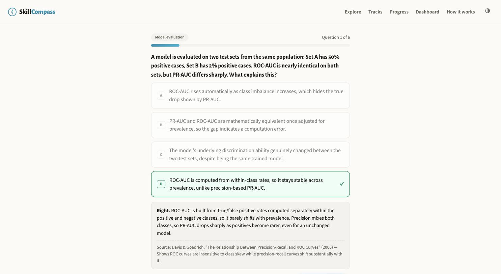
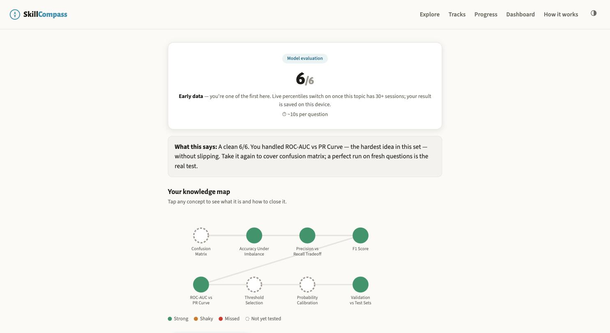
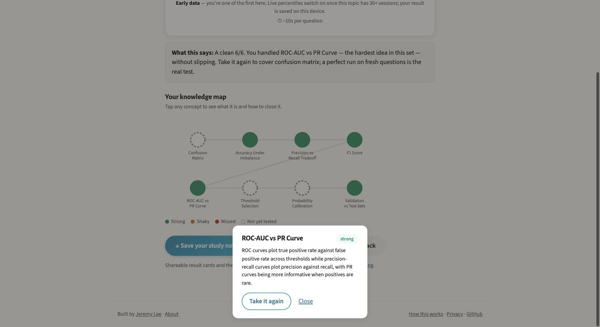
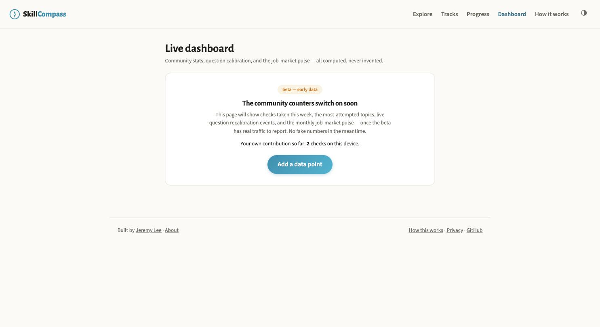
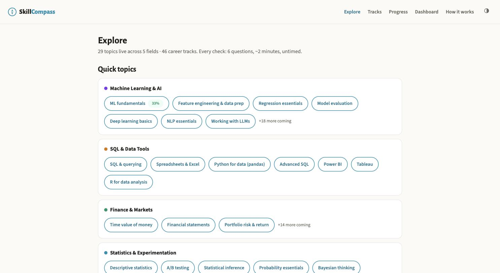
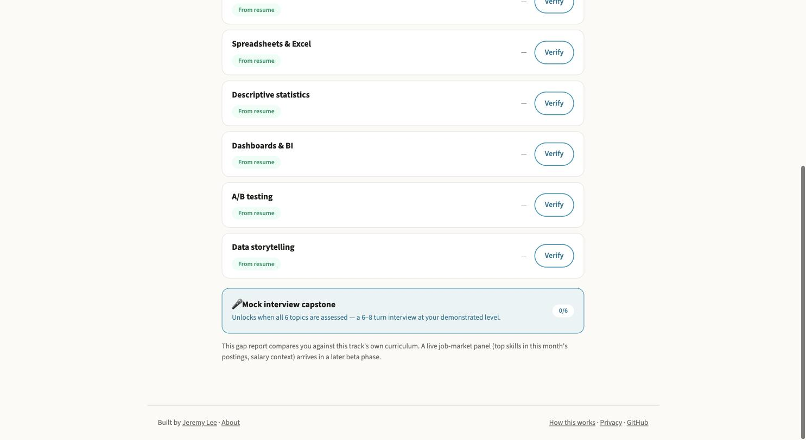
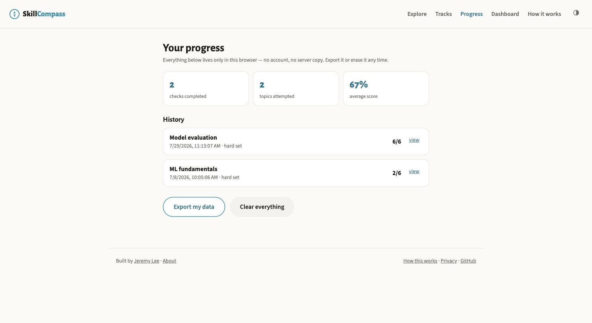

Try it
The check, running on this page
These are the real Model evaluation questions, with the app's own routing and scoring copied in. The first question is the placement item, the one closest to median difficulty. Get it wrong and the set comes from the easy end of the bank; get it right in under 20 seconds and it comes from the hard end; right but slower and you get the middle. Your rating then moves after each of the six answers. Nothing is stored or sent.
Session rating
1500
Set by the placement answer: 1350, 1500 or 1650.
Green: strong, every answer on that concept right. Amber: shaky, some right. Ink: missed. Dashed: not tested yet. These are the rules the app's knowledge map uses.
From claim to evidence
Paste a résumé and get a list of things to verify
A career track is a job broken into six topics. Open one and it starts at zero: nothing assessed, and here are the six things this role wants evidence of. Paste a résumé, or photograph one, and SkillCompass reads it against that track's curriculum and badges the topics your experience claims. Each badge comes with a Verify button, because a line on a CV is still only a claim.


The text goes to one Gemini call and is not stored. The report compares you with the track's curriculum only. There is no job-postings corpus yet, so it makes no claim about market demand or salary, and the page says so under every report.
Where the questions come from
Every answer names the source it was written against
Answer a question and the explanation opens, right or wrong: which option was correct, why the tempting one isn't, and the public reference behind it. The placement question in the demo above cites Davis and Goadrich's 2006 paper on precision-recall and ROC curves.
A multiple-choice question with a debatable key is worse than none, so the pipeline assumes its own drafts are wrong. One model pass drafts questions in difficulty bands. A second, independent pass checks each one for the usual faults (an ambiguous key, a giveaway option length, trick phrasing) and repairs or rejects it. The plan adds a person's sign-off before a question counts; as noted above, the banks in the repo are still marked as waiting for it.

What you get back
A map of the topic, under the mark out of six
The score is one line. Below it is the knowledge map: every concept in the topic, colored by how you did on the questions that touched it, with the prerequisite links drawn in. Concepts your six questions never reached stay dashed. Tap a node for what the concept is and a way back into fresh questions on it. Under the map sits a short diagnosis written by rules, not by a model.


A clean 6/6. You handled ROC-AUC vs PR Curve, the hardest idea in this set, without slipping. Take it again to cover confusion matrix; a perfect run on fresh questions is the real test.
The diagnosis the app wrote for that run
How difficulty is set
Plain Elo arithmetic, and one part still to build
Each question carries a prior p: the estimated share of median professionals who get it right, set when it is drafted and re-estimated by the review pass. That becomes an item rating. Your session rating starts at 1350, 1500 or 1650 depending on the placement answer and moves after every answer by at most 48 points.
R_item = 1500 − 400 · log10(p / (1 − p))A question's rating from its prior. p = 0.5 gives 1500.E = 1 / (1 + 10^((R_item − R_you) / 400))The chance the model gives you of answering it right.R_you ← R_you + 48 · (correct − E)Your update after each answer. Built; it is what the demo uses.K_item = 32 / (1 + n/40)Planned, not built. Item ratings would move toward real answer rates, in steps that shrink as an item collects n answers. The answer log it needs was being collected until the database paused.A hard question pays more for a right answer and costs less for a wrong one
Points your rating moves for one answer (up the side) against the question's rating (along the bottom, harder to the right). The grey bars are the 645 questions in the repo, placed by their priors.
Only first exposures would feed recalibration, so retaking a topic can't skew an item's statistics. The app's How this works page sets all of this out, formulas included.
The number it won't invent
No percentile until 30 people have taken the check
A percentile here means your final rating placed against every logged session on that subtopic in a rolling 90-day window. Below 30 sessions the result says "early data" and gives no number. Your first attempt fixes the percentile, so retakes draw unseen questions without letting you shop for a better rank. The community dashboard follows the same rule and says plainly that it has nothing to show yet.
The sessions behind all of this live in Supabase, and the free tier pauses a project after seven days without activity. A twice-weekly keep-alive job pings the API and checks the response bodies, not just the status codes, because the first version of that job passed for three weeks while the database was down. It has failed, correctly, on every run since 6 August 2026, when the project paused again. Until someone resumes it, every subtopic stays at "early data".

How much is live
385 subtopics catalogued, 29 with questions
content/catalog.json lists 385 subtopics across 46 fields and 117 career tracks. A subtopic goes live when its bank reaches 12 questions, and a build script works out field and track status from whatever banks exist, so nothing is flipped by hand. Four tracks are complete (Data Analyst, Data Scientist/ML, BI Analyst, Business/Product Analytics) and 42 more are partly covered.
Statistics and SQL are complete; 41 of 46 fields have nothing live yet
Each bar is a field's catalogued subtopics; the filled part is the share with a live question bank. From content/manifest.json.
| Field | Live of catalogued | Bar |
|---|

The capstone
A mock interview that asks the second question
Assess all six topics in a track and a mock interview unlocks: six to eight turns of text, pitched at the level your results showed rather than the one you claimed, ending in a scorecard by dimension. It follows up when an answer is thin. In testing, a deliberately vague answer was flagged and scored low across several follow-ups. The server keeps no session; the browser resends the transcript each turn. Candidate answers are wrapped in tags under a rule against prompt injection, and a backend test checks that the rule is in the prompt.
The third model feature is a study guide: a downloadable Markdown plan for a whole track, built from your per-concept results and, where they exist, your résumé and interview. All three share one Gemini helper with a daily cap of 1,200 calls, shown on the methodology page as a capacity meter.

Your data
One browser key, an export button and an erase button
There are no accounts. Everything you do is kept in one localStorage key (sc_v1). The Progress page lists every check with its date and score and has two buttons: take it all away as a file, or delete it. The only central record is an anonymous answer log (question, right or wrong, time taken), which is what percentiles and the planned recalibration run on.

Smaller things: the whole check works from the keyboard (A to D, then Return); the placement can be skipped by picking a level; a résumé photo is read the same way as pasted text; and a track with only some banks ready carries a readiness badge instead of failing halfway through.
What it runs on
Free tiers, and a quiz loop that needs no server
Questions ship as static JSON, and scoring, the knowledge map and the diagnosis all run in the browser. That is why the demo above works and why the app's checks keep working with the database paused: only percentiles and the model features need the backend.
- Frontend
- React, Vite and TypeScript, built to static files on GitHub Pages.
- API
- Python FastAPI on a free Hugging Face Space. Percentiles and the three model features only.
- Session store
- Supabase Postgres, free tier, reached through a 40-line standard-library PostgREST client after the official SDK misread the new key format. Paused as of this writing.
- Model features
- Gemini 2.5 Flash on the free tier over plain REST, with thinking tokens off so answers aren't cut short.
- Questions
- Drafted in difficulty bands, checked by an independent model pass, each tied to a named public source. Curricula referenced against Coursera, edX and Kaplan.